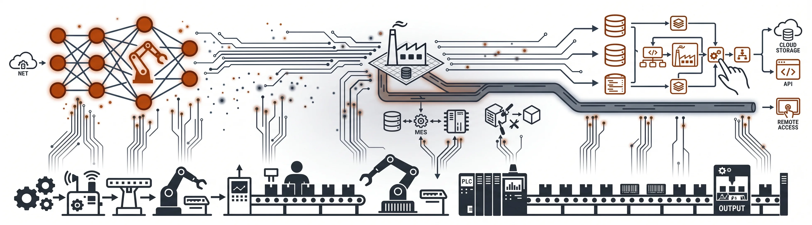
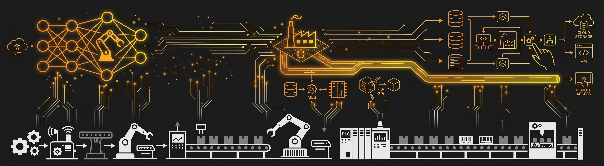
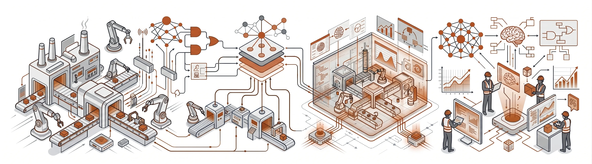
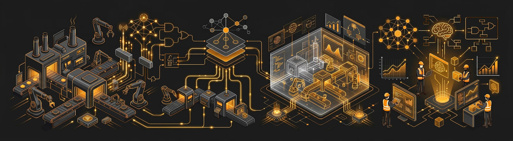

mes-mom
Manufacturing Execution Systems and Manufacturing Operations Management. Software bridges between shop-floor operations and enterprise planning.
We modernize the software stack that runs a shop floor — MES/MOM, edge, digital twin, AI — without touching the physical line.
The execution and data layers that digitize a production line.
layers


Manufacturing Execution Systems and Manufacturing Operations Management. Software bridges between shop-floor operations and enterprise planning.
Industrial IoT and edge data layers. Processing production telemetry at the source — strictly software-defined and hardware-agnostic.
Virtual representations of physical assets, processes, and workflows. Software environments to simulate and predict shop-floor behaviour before changes hit the line.
Applying machine learning to physical manufacturing. On our near-term roadmap: inference at the edge, predictive modeling on the shop floor, and operator-assist AI in the loop.
Hands-on architecture and implementation, builder-to-builder. We embed with engineering teams already mid-modernization. Remote-friendly with global clients.
platform expertise
practice areas


Configuration and deployment of the SAP Manufacturing Suite — PEO, DM, MII, ME, BTP — for production environments. We work in code and on the floor.
Connecting legacy industrial systems to modern data environments. Custom middleware, software connectors, and APIs that fit the stack you already have.
End-to-end software architecture from edge telemetry to ERP. Hardware-agnostic by design.
Migrating and refactoring legacy industrial applications to cloud-native or edge runtimes. Without halting production.
A founder-led engineering practice. Hands-on across the SAP Manufacturing Suite, production systems, edge data, and digital-twin architectures.
expertise
Nearly two decades building software that connects SAP and other business systems directly to machines on the factory floor. Aerospace, automotive, and pharmaceutical lines — turning Industry 4.0 from spec to working systems.
Connected dozens of machines in an aerospace factory to a single digital network. Built live production dashboards that reduced equipment downtime. Linked SAP to factory software, automating production orders end-to-end.
Pure software, hardware-agnostic, builder-to-builder. We write code that runs on shop floors — for the people who keep them running.
Tell us about your manufacturing stack and what you're trying to solve. We typically respond within one business day.
Or reach us directly at info@dhiphos.com.